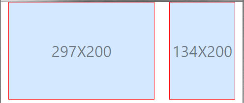

受到螢幕解析度查詢工具與視窗拖拉顯示元素寬高的啟發，
我也想自製一個「視窗拖拉顯示元素寬高」工具，
好方便我在未來作響應式設計能夠快速知道元素的寬高。
<!doctype html> <html lang="en"> <head> <!-- Required meta tags --> <meta charset="utf-8"> <meta name="viewport" content="width=device-width, initial-scale=1, shrink-to-fit=no"> <!-- Bootstrap CSS --> <link rel="stylesheet" href="https://maxcdn.bootstrapcdn.com/bootstrap/4.0.0/css/bootstrap.min.css" integrity="sha384-Gn5384xqQ1aoWXA+058RXPxPg6fy4IWvTNh0E263XmFcJlSAwiGgFAW/dAiS6JXm" crossorigin="anonymous"> <title>Hello, world!</title> <style> .test { width: 100%; height: 200px; border: 1px red solid; } .get-xy { text-align: center; text-overflow: ellipsis; white-space: nowrap; overflow: hidden; background-color: rgba(0, 123, 255, 0.17); } .get-xy::before { content: ""; height: 100%; width: 0; display: inline-block; vertical-align: middle; } .show-xy { vertical-align: middle; font-size: 2rem; color: rgba(0, 0, 0, 0.5); } </style> </head> <body> <div class="container-fluid"> <div class="row"> <div class="col-8"> <div class="test get-xy"></div> </div> <div class="col-4"> <div class="test get-xy"></div> </div> </div> </div> <script> window.addEventListener("load", funcLoad); window.addEventListener("resize", funcResize); function funcLoad() { var measures = document.getElementsByClassName("get-xy"); for (index in measures) { measures[index].innerHTML = measures[index].innerHTML + "<span class='show-xy'>" + measures[index].offsetWidth + "X" + measures[index].offsetHeight + "</span>"; } } function funcResize() { var showXY = document.getElementsByClassName("show-xy"); var length_showXY = showXY.length; for (i = 0; i < length_showXY; i++) { showXY[0].remove(); } var measures = document.getElementsByClassName("get-xy"); for (index in measures) { measures[index].innerHTML = measures[index].innerHTML + "<span class='show-xy'>" + measures[index].offsetWidth + "X" + measures[index].offsetHeight + "</span>"; } } </script> <!-- Optional JavaScript --> <!-- jQuery first, then Popper.js, then Bootstrap JS --> <script src="https://code.jquery.com/jquery-3.2.1.slim.min.js" integrity="sha384-KJ3o2DKtIkvYIK3UENzmM7KCkRr/rE9/Qpg6aAZGJwFDMVNA/GpGFF93hXpG5KkN" crossorigin="anonymous"></script> <script src="https://cdnjs.cloudflare.com/ajax/libs/popper.js/1.12.9/umd/popper.min.js" integrity="sha384-ApNbgh9B+Y1QKtv3Rn7W3mgPxhU9K/ScQsAP7hUibX39j7fakFPskvXusvfa0b4Q" crossorigin="anonymous"></script> <script src="https://maxcdn.bootstrapcdn.com/bootstrap/4.0.0/js/bootstrap.min.js" integrity="sha384-JZR6Spejh4U02d8jOt6vLEHfe/JQGiRRSQQxSfFWpi1MquVdAyjUar5+76PVCmYl" crossorigin="anonymous"></script> </body> </html>
用法：對於特定的 viewport 寬度想得知現在某個元素寬高，
只要於該元素套用類別名稱 .get-xy 即可。

參考資料：